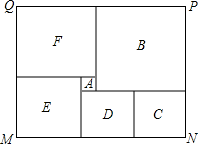

第五章 一元一次方程（举一反三讲义）全章题型归纳
【北师大版2024】

【基础巩固】 1
【题型1 一元一次方程的定义】 1
【题型2 一元一次方程的解】 3
【题型3 等式的基本性质】 5
【题型4 解一元一次方程】 7
【能力提升】 9
【题型5 根据一元一次方程解的关系求参数】 9
【题型6 整体思想求一元一次方程的解】 12
【题型7 一元一次方程的应用】 14
【思维拓展】 17
【题型8 解含绝对值的一元一次方程】 17
【题型9 利用一元一次方程解决规律问题】 20
【题型10 含字母系数的一元一次方程的解法】 23

【基础巩固】
【题型1 一元一次方程的定义】
【例1】（24-25七年级上·河南·期末）若方程m−1x2+mx−x+2=0是关于x的一元一次方程，则m的值为（ ）
A．1 B．1或−1 C．−1 D．2
【答案】C
【分析】本题考查根据一元一次方程的定义，求参数的值，根据一元一次方程的定义，得到m−1=0且m−1≠0，进行求解即可．
【详解】解：m−1x2+mx−x+2=0，整理，得：m−1x2+m−1x+2=0，
∵方程为一元一次方程，
∴m−1=0且m−1≠0，
解得：m=−1；
故选C．
【变式1-1】（24-25七年级上·甘肃白银·阶段练习）下列方程是一元一次方程的是（ ）
A．2x+3y=9 B．x2−2x=4 C．1x=1 D．12x−1=3x
【答案】D
【分析】本题主要考查一元一次方程，根据一元一次方程的定义逐一判断即可．
【详解】解：A． 2x+3y=9有两个未知量，该方程不是一元一次方程，故不符合题意；
B． x2−2x=4未知量的最高次项是2，该方程不是一元一次方程，故不符合题意；
C． 1x=1含有分式，不是整式方程，该方程不是一元一次方程，故不符合题意；
D． 12x−1=3x是一元一次方程，故符合题意；
故选：D．
【变式1-2】关于x的方程2xm−3m=0是一元一次方程，则m= ．
【答案】1
【分析】此题主要考查了一元一次方程的定义，只含有一个未知数（元），且未知数的次数是1，这样的整式方程叫一元一次方程．根据一元一次方程的定义可得m=1．
【详解】解：∵关于x的方程2xm−3m=0是一元一次方程，
由题意得：m=1．
故答案为：1．
【变式1-3】在已知下列方程：① x−2=2x，② 0.3x=1，③ x2=5x−1，④ 2x2−3=0，⑤ x=6，⑥ x+y=0，其中是一元一次方程的有（ ）
A．5个 B．4个 C．3个 D．2个
【答案】C
【分析】本题考查了一元一次方程的定义，根据一元一次方程的定义（只含一个未知数，未知数的次数为1，且为整式方程）逐一判断各方程即可，掌握一元一次方程的定义是解题的关键．
【详解】解：① x−2=2x，右边为分式，不是整式方程，不符合题意；
② 0.3x=1，仅含未知数x，次数为1，且为整式方程，符合题意；
③ x2=5x−1，仅含未知数x，次数为1，且为整式方程，符合题意；
④ 2x2−3=0，仅含未知数x，次数为2，不符合题意；
⑤ x=6，仅含未知数x，次数为1，且为整式方程，符合题意；
⑥ x+y=0，含未知数x、y，不符合题意；
综上，符合条件的有②③⑤，共3个，
故选：C．
【题型2 一元一次方程的解】
【例2】（24-25七年级上·安徽合肥·期末）若x=2是关于x的一元一次方程ax−b−4=0的解，则1−4a+2b的值是 ．
【答案】−7
【分析】本题主要考查了一元一次方程的解，代数式求值，先把x=2是代入方程ax−b−4=0得2a−b=4，再将代数式1−4a+2b变形得1−22a−b，然后代入计算即可，掌握方程的解，代数式求值是解题的关键．
【详解】解：∵x=2是关于x的一元一次方程ax−b−4=0的解，
∴2a−b−4=0，即2a−b=4，
∴1−4a+2b=1−22a−b
=1−2×4
=1−8
=−7，
故答案为：−7．
【变式2-1】（24-25七年级上·天津河西·期末）x=3是下列哪个方程的解（ ）
A．5x−2=4x+1 B．5x−2=4x−1
C．5x+2=4x−1 D．5x+2=−4x−1
【答案】A
【分析】本题主要考查了方程的解，掌握方程的解是方程左右两边相等的未知数的值成为解题的关键．将x=3代入各项逐项判断即可．
【详解】解：当x=3时，
A．5x−2=13=13=4x+1，符合题意；
B．5x−2=13≠11=4x−1，不符合题意；
C．5x+2=17≠11，不符合题意；
D．5x+2=17≠−13=−4x−1，不符合题意．
故选：A．
【变式2-2】（24-25七年级下·全国·单元测试）已知x=2是关于x的方程12a+x=a⋅x+1的解，则a的值是（ ）
A．23 B．45 C．1 D．−2
【答案】B
【分析】本题考查了一元一次方程的解：满足一元一次方程的未知数的值叫一元一次方程的解．
把x=2代入方程计算即可求出a的值．
【详解】解：把x=2代入12a+x=a⋅x+1，得12a+2=a2+1，
解得：a=45，
故选B．
【变式2-3】（24-25七年级下·福建泉州·期中）整式ax+b的值随着x的取值的变化而变化，如表是当x取不同的值时对应的整式的值：
x | −1 | 0 | 1 | 2 | 3 |
ax+b | −8 | −4 | 0 | 4 | 8 |
则关于x的方程−ax−b=−4的解是 ．
【答案】x=2/2=x
【分析】本题主要考查了一元一次方程的解知识点，掌握等式的性质成为解题的关键．将−ax−b=−4变形为ax+b=4，观察表格数据可得答案．
【详解】解：∵ −ax−b=−4，
∴ax+b=4，
由表可知，当x=2时，ax+b=4，
∴关于x的方程−ax−b=−4的解是x=2．
故答案为：x=2．
【题型3 等式的基本性质】
【例3】（2025·安徽滁州·三模）已知a，b，c均为非实数，且13a−112b=14c，则下列结论正确的是（ ）
A．若c=3b，则a=4c B．若a=b，则b=c
C．若b>0，则4a<3c D．a+c=1123a−b+4c
【答案】B
【分析】本题考查等式的性质及完全平方公式，正确记忆等式的性质并正确做出判断是解题关键．根据等式的性质进行判断即可．
【详解】解：A．若c=3b，则b=13c，代入13a−112b=14c，
得13a−112×13c=14c，
∴a=56c，故A错误，不符合题意；
B．若a=b，则13b−112b=14c，
∴b=c，故B正确，符合题意；
C．∵13a−112b=14c，
∴13a−14c=112b，
∴4a−3c=b，
∵b>0，
∴4a−3c>0，
∴4a>3c，故C错误，不符合题意；
D．∵13a−112b=14c，
∴13a−14c=112b，
∴4a−3c=b，
∵a+c=1123a−b+4c，
∴12a+12c=3a−b+4c，
∴b=−9a−8c，
∵4a−3c≠−9a−8c，
∴由13a−112b=14c得不出a+c=1123a−b+4c，故D错误，不符合题意；
故选：B．
【变式3-1】已知8m+3n+2=4m+7n，利用等式的性质比较m与n的大小关系：m n.(填“>”“<”或“=”)
【答案】<
【分析】本题考查等式的性质，熟练掌握等式的性质是解题的关键．
【详解】解：8m+3n+2=4m+7n，
得4m−4n=−2，
两边除以4，
得m−n=−12<0，
所以m<n．
【变式3-2】（24-25七年级下·浙江杭州·期末）若商品的进价为a，售价为b，则毛利率p=b−abb>a，把这个公式变形成已知p，a，求b的公式，应为（ ）
A．b=b−ap B．b=pb+a C．b=a1−p D．b=a1+p
【答案】C
【分析】本题考查等式的性质，熟练掌握等式的性质是解题的关键．
将已知的毛利率公式进行等式变形，得出b的表达式即可．
【详解】解：∵p=b−ab，
∴p⋅b=b−a
p⋅b−b=−a
bp−1=−a
∴b=a1−p
故选：C．
【变式3-3】（24-25七年级上·内蒙古乌兰察布·期末）下列变形：①如果a2=3a，那么a=3；②如果ac=bc，那么a=b；③如果1a=1b那么a=b；④如果a=b，那么ac2+1=bc2+1．其中正确的是 ．（填序号）
【答案】②③④
【分析】本题考查了等式的基本性质，正确掌握等式的性质是解题的关键．根据等式的性质逐项分析即可．
【详解】解：①如果a2=3a，那么当a≠0时，a=3，故①不正确；
②如果ac=bc，那么a=b，故②正确；
③如果1a=1b那么a=b，故③正确；
④如果a=b，那么ac2+1=bc2+1，故④正确．
故答案为：②③④．
【题型4 解一元一次方程】
【例4】（24-25七年级上·安徽六安·期中）小强在解方程“−3x−1=2x+k”时，将“−3x”中的“−”抄漏了，得出x=4，则原方程正确的解是（ ）
A．x=−45 B．x=45 C．x=25 D．x=4
【答案】A
【分析】本题考查了解一元一次方程和一元一次方程的解的应用，能求出k的值是解此题的关键．小强漏抄负号后解得的x=4可求出k的值，再代入原方程求解即可．
【详解】小强将方程抄为3x−1=2x+k，解得x=4，
则将x=4代入错误方程得：3×4−1=2×4+k，
解得：k=3．
原方程为：−3x−1=2x+3，
移项得：−3x−2x=3+1，
即−5x=4，
解得：x=−45．
故选：A．
【变式4-1】（24-25七年级下·山西临汾·期中）若代数式4x+5与2x+3的值互为相反数，则x等于（ ）
A．−43 B．43 C．−1 D．34
【答案】A
【分析】本题考查相反数的性质，解一元一次方程，根据相反数的性质得到4x+5+2x+3=0，解方程即可解答．
【详解】解：∵代数式4x+5与2x+3的值互为相反数，
∴4x+5+2x+3=0，
解得x=−43．
故选：A
【变式4-2】（24-25七年级上·广东深圳·期中）按如图所示的程序进行计算，若输入x的值是3，则输出y的值为1．若输出y的值为3，则输入x的值是（ ）

A．7 B．−13 C．7或−13 D．−7或13
【答案】A
【分析】本题考查了程序框图的含义，一元一次方程的应用，正确理解程序是解题的关键．根据输入x的值是3，则输出y的值为1，得到3−b2=1，求得b，具体化后，分别令式子值为3，求得x的值，符合范围的就是所求．
【详解】解：∵输入x的值是3，则输出y的值为1，
∴3−b2=1，解得：b=1，
当x≥−1时，y=x−12，
当x<−1时，y=−3x+2，
当y=x−12=3时，解得：x=7≥−1，符合题意；
当y=−3x+2=3时，解得：x=−13>−1，不符合题意；
故选：A．
【变式4-3】（25-26七年级上·全国·课后作业）方程x2×4+x4×6+⋯+x2024×2026=2024的解是 ．
【答案】x=8104
【分析】本题考查了解一元一次方程，将方程变形为2531013x=2024，即可得到答案，正确的运算是解题的关键．
【详解】解：x2×4+x4×6+⋯+x2024×2026
=x4(11×2+12×3+⋯+11012×1013)
=x4(11−12+12−13+...+11012−11013)
=x4(11−11013)
=x4(10121013)
=2531013x
2531013x=2024，
∴x=8104，
故答案为：x=8104 ．
【能力提升】
【题型5 根据一元一次方程解的关系求参数】
【例5】（24-25七年级下·吉林长春·阶段练习）若关于x的方程3x+2=2x−5的解与方程253x+2=k10+32x−1的解互为相反数，则k的值为 ．
【答案】2
【分析】本题考查方程的解的问题及参数的求解，解题的关键是分别求出两个方程的解，根据互为相反两个数和为0，列新方程求解．
分别解出两个方程的解用含k的字母表示，再根据互为相反数列式即可得到答案．
【详解】解：由题意得：解方程3x+2=2x−5，
解得x=−7；
解方程253x+2=k10+32x−1，
解得x=23−k3；
∵两个方程的解互为相反数，
∴ 23−k3+−7=0，
解得：k=2；
故答案为：2
【变式5-1】（24-25七年级上·新疆阿克苏·期末）若方程x+3=0的解与关于x的方程3x+2=k−12的解相同，则k的值为 ．
【答案】5
【分析】本题考查同解方程，求出x+3=0的解，将解代入3x+2=k−12中，求出k的值即可．
【详解】解：∵x+3=0，
∴x=−3，
把x=−3代入3x+2=k−12，得：3×−3+2=k−12，
解得：k=5；
故答案为：5．
【变式5-2】关于x的方程5m+4x=1+2x的解比关于x的方程2x+5m=7m的解大2，则m的值为（ ）
A．−37 B．37 C．57 D．−57
【答案】A
【分析】本题考查一元一次方程的解，熟练掌握解一元一次的步骤是解题的关键；
根据题意解方程5m+4x=1+2x和2x+5m=7m，得1−5m2−m=2，解方程即可；
【详解】解：解方程5m+4x=1+2x得x=1−5m2，
解方程2x+5m=7m得x=m，
根据题意得1−5m2−m=2，
解得m=−37．
故选：A．
【变式5-3】（24-25八年级上·贵州铜仁·期中）对于一些特殊的方程，我们给出两个定义：①若两个方程有相同的解，则称这两个方程为“相似方程”；若两个方程有相同的整数解，则称这两个方程为“相伴方程”．
(1)判断方程6−41−x=2x与3x−1x+2=−4是否为“相似方程”，并说明理由；
(2)已知关于x，y的二元一次方程y=mx+6和y=x+4m是“相伴方程”，求正整数m的值．
【答案】(1)是，理由见解析
(2)m=2或m=3
【分析】本题考查了新定义——“相似方程”“相伴方程”，以及解一元一次方程和解分式方程．熟练掌握相关性质内容，是解题的关键．
（1）先分别算出方程6−4(1−x)=2x与3x−1x+2=−4的解，再结合“相似方程”进行判断，即可作答．
（2）因为关于x，y的二元一次方程y=mx+6和y=x+4m是“相伴方程”，所以mx+6=x+4m，整理得x=4m−6m−1=4−2m−1，结合x，y，m均为整数，则m1=0，m2=2，m3=−1，m4=3，因为m为正整数，据此即可作答．
【详解】（1）解：方程6−4(1−x)=2x与方程3x−1x+2=−4是“相似方程”，理由如下：
解方程6−4(1−x)=2x得
x=−1，
解方程3x−1x+2=−4得
x=−1，
检验：x=−1是该分式方程得解．
∴方程6−4(1−x)=2x与方程3x−1x+2=−4是“相似方程”
（2）解：∵y=mx+6和y=x+4m是“相伴方程”．
∴mx+6=x+4m
x=4m−6m−1=4−2m−1
∵x，y，m均为整数，
∴m−1=±1，m−1=±2，
∴m1=0，m2=2，m3=−1，m4=3，
又∵m为正整数
∴m=2或m=3
【题型6 整体思想求一元一次方程的解】
【例6】（24-25七年级下·山西吕梁·期中）在解一元一次方程时，有时根据方程的表面特点，巧妙利用整体法，可以达到简化计算的效果．
例如：在解方程512x+13−712x+13+2=−12x+13时，把12x+13看作一个整体．
令m=12x+13，原方程变为5m−7m+2=−m，
移项，得5m−7m+m=−2，
合并同类项，得−m=−2．
系数化为1，得m=2，
故12x+13=2，解得x=103．
阅读以上材料，请用同样的方法解方程：20258x+3−20248x+3−5=28x+3．
【答案】x=−1
【分析】本题考查了解一元一次方程，能正确换元是解此题的关键．把8x+3看作一个整体，再按照解一元一次方程的方法求解即可．
【详解】解：20258x+3−20248x+3−5=28x+3
令a=8x+3，则原方程变为2025a−2024a−5=2a，
移项得：2025a−2024a−2a=5，
合并同类项得：−a=5，
系数化为1得：a=−5，
故8x+3=−5，
解得：x=−1．
【变式6-1】整体法解方程∶5(4x+6)−34(x−1)=2(x−1)−14(4x+6)．
【答案】x=−13773
【分析】本题考查了解一元一次方程的应用，注意用了整体代入思想，即把4x+6和x−1分别当作一个整体来合并．移项、合并同类项、去分母、移项、合并同类项、系数化成1即可．
【详解】解∶将4x+6,x−1都看成整体进行移项、合并同类项，得214(4x+6)=114(x−1)．
去分母，得21(4x+6)=11(x−1)．
去括号，得84x+126=11x−11．
移项、合并同类项，得73x=−137．
系数化为1，得x=−13773．
【变式6-2】（25-26七年级上·全国·课后作业）整体法解方程：42x+2−122x+4+5=1．
【答案】x=134
【分析】此题是一道材料信息题，主要考查了解一元一次方程，理解并应用材料中介绍的换元法是解本题的关键．
利用换元法，先设a=2x+4，原方程可转化为关于a的一元一次方程，解出a后再代入求出x的值．
【详解】解：设a=2x+4，原方程可转化为4a−12a+5=1，
去括号，得4a−2a−20=1，
移项，得4a−2a=1+20，
合并同类项，得2a=21，
两边都除以2，得a=212，
所以2x+4=212，
解得x=134．
【变式6-3】（24-25六年级上·上海·阶段练习）若关于x的一元一次方程12024x+3=2x+b的解为x=−3，则关于y的一元一次方程120241−y=−2y−1+b的解为 ．
【答案】y=4
【分析】本题考查了一元一次方程的解法，将方程120241−y=−2y−1+b变形得120241−y+3=21−y+b，设1−y=x，可得方程120241−y+3=21−y+b的解即为方程12024x+3=2x+b的解，即得1−y=−3，据此即可求解，掌握换元法是解题的关键．
【详解】解：方程120241−y=−2y−1+b变形得，120241−y+3=21−y+b，
设1−y=x，
则方程120241−y+3=21−y+b的解即为方程12024x+3=2x+b的解，
∵方程12024x+3=2x+b的解为x=−3，
∴1−y=−3，
∴y=4，
∴一元一次方程120241−y=−2y−1+b的解为y=4，
故答案为：y=4．
【题型7 一元一次方程的应用】
【例7】（24-25七年级上·辽宁铁岭·期末）春节将至，中央广播电视总台《2025年春节联欢晚会》发布官方吉祥物形象“巳升升”，祝福全球华人在新的一年如意康宁，好事连连．“巳升升”吉祥物摆件也随之热销，某超市用18000元从厂家购进了300个“巳升升”摆件，并以每个80元的价格销售，销售了一部分后正值元旦促销，该超市将剩下的“巳升升”摆件在原售价的基础上打9折继续销售，并且全部售完．已知这批“巳升升”摆件获得的总利润是4560元．

(1)求每个“巳升升”摆件的进价是多少元？
(2)请你算一算打9折前共售出多少个“巳升升”摆件？
【答案】(1)60元
(2)120个
【分析】本题考查一元一次方程的应用，解题的关键是读懂题意，找到等量关系列出方程．
（1）用购买金额除以数量，即可得到进价；
（2）设打9折前共售出x个“巳升升”摆件，根据这批“巳升升”摆件获得的总利润是4560元列方程可解得答案．
【详解】（1）解：∵某超市用18000元从厂家购进了300个“巳升升”摆件，
∴每个“巳升升”摆件的进价是18000÷300=60（元）；
答：每个“巳升升”摆件的进价是60元；
（2）解：设打9折前共售出x个“巳升升”摆件，
根据题意得：80x+80×0.9300−x=18000+4560，
解得x=120，
∴打9折前共售出120个“巳升升”摆件．
【变式7-1】某服装厂生产一种型号的服装，已知3米长的布料可做2件上衣或3条裤子，一件上衣和一条裤子为一套，现在库内存有这种布料600米，那么一共能加工服装 套．
【答案】240
【分析】本题考查一元一次方程的实际应用．
设一共能加工服装x套，根据题意列方程求解即可．
【详解】解：设一共能加工服装x套，
根据题意可得32+33x=600，
解得x=240，
∴一共能加工服装240套．
故答案为：240．
【变式7-2】又到了春暖花开的时节，淮安外国语学校一年一度的“踏青节”即将拉开帷幕．“烟花三月下扬州”，美丽的瘦西湖成了同学们的首选目标．国家旅游胜地“五星级”风景区瘦西湖的团体参观门票价格规定如下表：
购票人数（人） | 1～50 | 51～100 | 101～150 | 150以上 |
参观门票价格（元/人） | 50 | 45 | 40 | 35 |
去年我校七（1）、（2）两班共103人（其中（1）班人数多于（2）班人数）去参观瘦西湖，如果两班都以班级为单位分别购票，则一共需付4860元．
(1)你认为有没有最节约的购票方法？如果有，可以节约多少元钱？
(2)你能确定两班各有多少名学生吗？
(3)如果本校初一（3）班共45人也一同前去参观，那又如何购票最合理呢？共需多少元钱？
【答案】(1)有，可以节约740元钱
(2)1班有58人，2班有45人
(3)购买151张，总票价为5285元
【分析】本题主要考查了一元一次方程的应用，解题的关键是找准确等量关系，要注意考虑全面，购票最省钱的办法就是团体购票．
（1）最节约的办法就是团体购票，节省的钱=4860−团体票价；
（2）分有两种情况：若1班和2班人数都在51～100之间；若1班人数是51～100，2班人数是1～50；分别计算，即可求解；
（3）先计算出148人的团体票价，再计算出151人的团体票价，即可求解．
【详解】（1）解：有．可以节约4860−103×40=740（元）．
（2）解：设1班有x人，则2班有103−x人，根据题意，有两种情况：
若1班和2班人数都在51～100之间，
45x+103−x=4635≠4860（不符合题意，舍去）；
若1班人数是51～100，2班是1～50，
45x+50103−x=4860，
解得：x=58，
则103−x=45，
答：1班有58人，2班有45人；
（3）解：若3班也去，则三个班团体购票最合理，三个班的总人数有148人，总票价=148×40=5920元．
若买151张票，总票价为151×35=5285元，
∵5920>5285，
∴最合理的方法是购买151张，总票价为5285元．
【变式7-3】如图是某市民健身广场的平面示意图，它是由6个正方形拼成的长方形，已知中间最小的正方形A的边长是1米；

（1）若设图中最大正方形B的边长是x米，请用含x的代数式分别表示出正方形F、E、C的边长
（2）观察图形的特点可知，长方形相对的两边是相等的(即MN=PQ， MQ=PN)请根据以上结论，求出x的值
（3）现沿着长方形广场的四条边铺设下水管道，由甲、乙工程队单独铺设分别需要10天、15天完成，如果两队从同一位置开始，沿相反的方向同时施工2天后，因甲队另有任务，余下的工程由乙队单独施工，还要多少天完成?
【答案】（1）F的边长为（x-1）米；C的边长为x+12米；E的边长为（x-2）米；（2）7；（3）10
【分析】（1）若设图中最大正方形B的边长是x米，最小的正方形的边长是1米，从图中可看出F的边长为（x-1）米，C的边长为x+12，E的边长为（x-1-1），即可得到答案；
（2）根据长方形相对的两边是相等的（如图中的MN和P Q）．请根据这个等量关系，求出x的值；
（3）根据工作效率×工作时间=工作量这个等量关系且完成工作，工作量就为1，可列方程求解．
【详解】解：（1）若设图中最大正方形B的边长是x米，最小的正方形的边长是1米．
∴F的边长为：（x-1）米，
∴C的边长为：x+12米，
∴E的边长为：x-1-1=（x-2）米；
（2）∵MQ=PN，
∴x-1+x-2=x+x+12，
解得：x=7，
∴x的值为7；
（3）设余下的工程由乙队单独施工，还要x天完成．
∴（110+115）×2+115x=1，
解得：x=10．
答：余下的工程由乙队单独施工，还要10天完成．
【点睛】本题考查理解题意能力和看图的能力，根据题目给出的条件，找出合适的等量关系列出方程，再求解是解题的关键．
【思维拓展】
【题型8 解含绝对值的一元一次方程】
【例8】已知关于x的绝对值方程2||x−1|−2|=a有三个解，则a= ．
【答案】4
【分析】首先去绝对值符号得到∴|x−1|−2=±12a，然后分情况再次去绝对值符号共得到四种情况：x−1=12a+2、x−1=−12a+2、x−1=−12a+2、x−1=−−12a+2，然后用含a的代数式表示出方程的解，再根据方程有三个解，所以可得：，3+12a=−1−12a或3−12a=−1+12a，求出a=4或−4，再根据绝对值的非负性可得a=4．
【详解】解：∵2||x−1|−2|=a，
∴||x−1|−2|=12a
∴|x−1|−2=±12a，
当|x−1|−2=12a时，
移项得：|x−1|=12a+2，
∴x−1=±12a+2，
若x−1=12a+2，
解得：x=12a+3，
若x−1=−12a+2，
解得：x=−12a−1；
当|x−1|−2=−12a时，
移项得：|x−1|=−12a+2，
∴x−1=±−12a+2，
若x−1=−12a+2，
解得：x=−12a+3，
若x−1=−−12a+2，
解得：x=12a−1；
∴x=12a+3或−12a+3或−12a−1或12a−1，
∵方程有三个解，
∴3+12a=−1−12a或3−12a=−1+12a，
∴a=−4或4，
∵2||x−1|−2|=a
∴a>0，
∴a=4．
故本题答案为：4．
【点睛】本题考查了解含有绝对值的一元一次方程，解决本题的关键是正确理解绝对值的意义并根据绝对值的定义去掉绝对值符号，把方程转化为一般形式的方程．
【变式8-1】解方程0.1x−0.20.02=4−7x．
【答案】x=76或x=−3
【分析】本题主要考查了解绝对值方程，熟练掌握绝对值的性质是解题的关键．
根据绝对值的性质求解即可．
【详解】解：0.1x−0.20.02=4−7x，
根据绝对值的意义，得：0.1x−0.20.02=4−7x或0.1x−0.20.02=−4+7x，
解得：x=76或x=−3．
【变式8-2】解方程：|3x+1|−|1−x|=2．
【答案】−13⩽x<1时，x=12；x<−13时x=−2
【分析】令3x+1=0，1−x=0，得x=−13，x=1，根据这两个数进行分段，去绝对值符号求x值.
【详解】
解：①当x⩾1时，3x+1+1−x=2，
x=0，不存在；
②当−13⩽x<1时，3x+1+x−1=2，x=12；
③当x<−13时，−3x−1−1+x=2，x=−2，
∴|3x+1|−|1−x|=2的解是−13⩽x<1时，x=12；x<−13时x=−2．
【点睛】本题主要考查了含绝对值符号的一元一次方程的解法，解题的方法是令每个绝对值部分为0，将x的值分段去绝对值解方程．
【变式8-3】已知关于x的方程x−100−150=a有三个解，则a= .
【答案】150
【分析】本题主要考查了含绝对值符号的一元一次方程．根据题意得：a≥0，根据绝对值的定义，结合已知条件列出关于a的一元一次方程，求解之后判断答案即可；
【详解】解；根据题意得：a≥0，
∴x−100−150=±a，
∴x−100=150±a，
∴x−100=±150±a，
∴x=100±150±a，
∴x=250+a，x=250−a，x=−50+a，x=−50−a，
∵关于x的方程x−100−150=a有三个解，则有两个相等，
显然250+a=−50+a，250−a=−50−a不成立，
若250+a=−50−a，得到a=−150（舍去）；
若250+a=250−a，得到a=0，x=250，x=−50（舍去）；
若250−a=−50+a，得到a=150，x=400，x=100，x=−200（符合题意）；
若−50−a=−50+a，得到a=0，x=250，x=−50（舍去）；
故答案为：150．
【题型9 利用一元一次方程解决规律问题】
【例9】下列图形都是由面积为1的正方形按一定的规律组成的，其中第1个图形中面积为1的正方形有9个，第2个图形中面积为1的正方形有14个，第3个图形中面积为1的正方形有19个，…，按此规律，则有1104个面积为1的正方形的是（ ）
A．第190个图形 B．第200个图形
C．第210个图形 D．第220个图形
【答案】D
【分析】本题主要考查图形规律探究及解一元一次方程，熟练掌握通过分析前几个图形的数量关系得出规律是解题的关键．先找出图形中正方形个数的规律，得出第n个图形中正方形个数的表达式，再据此列方程求解．
【详解】解：第1个图形中面积为1的正方形有9个，即9=5×1+4；
第2个图形中面积为1的正方形有14个，即14=5×2+4；
第3个图形中面积为1的正方形有19个，即19=5×3+4；
⋯⋯；
所以第n个图形中面积为1的正方形有(5n+4)个．
令5n+4=1104
5n=1104−4
5n=1100
n=220
故选：D．
【变式9-1】一只小球落在数轴上的某点P0，第一次从P0向左跳1个单位到P1，第二次从P1向右跳2个单位到P2，第三次从P2向左跳3个单位到P3，第四次从P3向右跳4个单位到P4……若按以上规律跳了200次时，它落在数轴上的点P200所表示的数恰好是2020，则这只小球的初始位置点P0所表示的数是 ．
【答案】1920
【分析】本题考查了在数轴上表示有理数，一元一次方程的应用．根据题意正确的列方程是解题的关键．
设初始位置点P0所表示的数为a，依题意得，a−1+2−3+4+......−199+200=2020，计算求解即可．
【详解】解：设初始位置点P0所表示的数为a，
依题意得，a−1+2−3+4+......−199+200=2020，
∴a+1×100=2020，
解得，a=1920，
故答案为：1920．
【变式9-2】如图，是用小圆点按一定的规律组成的“七”字，第1个图形有7个小圆点，第2个图形有12个小圆点，第3个图形有17个小圆点，…，按照这样的规律，有252个小圆点的是第 个图形．

【答案】50
【分析】本题考查了图形的变化类问题，仔细观察图形，总结归纳第n个图形中的小圆点数量即可．
【详解】解：观察图形得：
第1个图形有5×1+2=7个小圆点，
第2个图形有5×2+2=12个小圆点，
第3个图形有5×3+2=17个小圆点，
…
第n个图形有5n+2个小圆点，
当5n+2=252时，n=50，
故答案为：50．
【变式9-3】（2025·河北邯郸·模拟预测）将正整数1至2025按一定规律排列．如图所示．平移表中带阴影的矩形框．矩形框中三个数的和可能是（ ）

A．2024 B．2022 C．2019 D．2040
【答案】B
【分析】本题主要考查了规律型的数字变化类、一元一次方程的应用等知识点，根据题意恰当地表示出三个数的和并结合中间数所处的位置分析是解题的关键．
设中间数为x，则另外两个数分别为：x−1、x+1，方框中三个数的和为：x−1+x+x+1=3x，分别令3x等于四个选项中的数字得到一元一次方程并求解，并结合能否形成三个相连的正整数依次分析即可．
【详解】解：设中间数为x，则另外两个数分别为：x−1、x+1，
∴方框中三个数的和为：x−1+x+x+1=3x，
若3x=2024，则x=67423，不是正整数，舍去，故A不符合题意；
若3x=2022，则x=674，674=84×8+2，则674在第85行第2列，
∴674的前后都可以有数，形成三数相连：673，674，675，故B符合题意；
若3x=2019，则x=673，673=84×8+1，
∴673在第85行第1列，故C不符合题意；
若3x=2040，则x=680，680=85×8，
∴680在第85行第8列，故D不符合题意．
综上，只有B符合题意．
故选：B．
【题型10 含字母系数的一元一次方程的解法】
【例10】（25-26七年级上·全国·课后作业）若关于x的方程k−2026x−2024=6−2026x+1的解是整数，则整数k的取值有（ ）
A．6个 B．5个 C．3个 D．2个
【答案】A
【分析】本题考查了解含参一元一次方程的整数解问题，把字母k当成已知数解方程，再根据x为整数确定k的值，最后统计k的个数即可．
【详解】解：k−2026x−2024=6−2026x+1可化为：
kx−2026x−2024=6−2026x−2026，
即：kx=4.
∴x=4k.
又x，k为整数，
∴k=±1或k=±2或k=±4.
故选：A．
【变式10-1】已知关于x的方程x−2−ax6=x3−2有非负整数解，则整数a的所有可能的取值的和为（ ）
A．−23 B．23 C．−34 D．34
【答案】C
【分析】先根据解方程的一般步骤解方程，再根据非负数的定义将a的值算出，最后相加即可得出答案．
【详解】解：x−2−ax6=x3−2
去分母，得6x−2−ax=2x−12
去括号，得6x−2+ax=2x−12
移项、合并同类项，得4+ax=−10
将系数化为1，得x=−104+a
∵ x=−104+a是非负整数解
∴a=−5或−6，−9，−14时，x的解都是非负整数
则−5+−6+−9+−14=−34
故选C．
【点睛】本题考查了一元一次方程的解，熟练掌握解方程的一般步骤是解题的关键．
【变式10-2】若不论k取什么数，关于x的方程2kx+m3−x−nk6=1（m、n是常数）的解总是x=1．则m+n的值是（ ）
A．−0.5 B．−1.5 C．0.5 D．15
【答案】A
【分析】先把x=1代入方程2kx+m3−x−nk6=1，整理成关于k的一元一次方程，根据方程的解与k无关，得到关于k的方程有无数解，根据一元一次方程有无数解的条件，列式解答即可．
本题考查了一元一次方程的解，熟练掌握方程有无数解的基本条件是解题的关键．
【详解】解：∵2kx+m3−x−nk6=1，
∴4kx+2m−x+nk=6，
∴4x+nk=6+x−2m，
∵不论k取什么数，关于x的方程2kx+m3−x−nk6=1（m、n是常数）的解总是x=1，
∴4+nk=7−2m，
∴4+n=0,7−2m=0，
∴n=−4,m=3.5，
∴m+n=−4+3.5=−0.5，
故选：A．
【变式10-3】如图，把8张形状大小一样的小长方形卡片（长为a，宽为b）不重叠地放在一个大长方形中，未覆盖部分恰好被分割成两个长方形（阴影部分），若左下方与右上方阴影部分面积的差为2ab，则ba的值为（ ）

A．13 B．14 C．15 D．29
【答案】C
【分析】本题主要考查整式的化简和一元一次方程的解法，解题的关键是设出合理的未知数；先设定大长方形的宽为x，根据题目条件建立方程，解方程求得a和b的关系，进而求得答案即可；
【详解】解：设大长方形的宽为x，
由题意得：左下方阴影部分的面积为ax−3b，右上方阴影部分的面积为5bx−a，
∵左下方与右上方阴影部分面积的差为2ab，
∴ax−3b−5bx−a=2ab，
整理得：a−5bx=0，
∵x≠0，
∴a−5b=0，
∴a=5b，
∴ba=15，
故选：C．